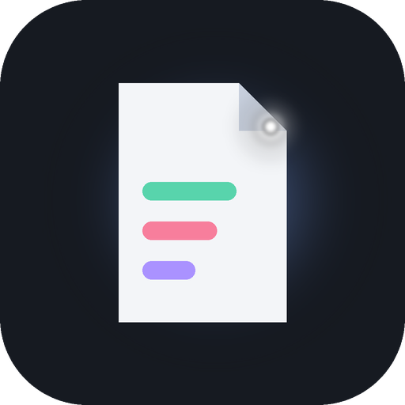

Privacy policy
Last updated: 27 November 2026
This policy covers the "ML Papers of the Day" upload application, which publishes episodes of the series to its own YouTube channel.
What the application accesses
The application requests one Google permission: youtube.upload, which lets it upload videos and thumbnails to the YouTube channel of the account that authorizes it. It is authorized only by the channel owner. It does not read, list or modify any other YouTube data, and it requests no other Google account data.
What it stores
It stores an OAuth refresh token for the channel owner's account, kept as a private secret in the owner's own environment, and used only to upload episodes. It stores no information about viewers or any other person.
Sharing
No data obtained through Google APIs is sold, shared with third parties, or used for advertising. Use of information received from Google APIs adheres to the Google API Services User Data Policy, including the Limited Use requirements.
Revoking access
Access can be revoked at any time at myaccount.google.com/permissions.
Contact
Questions about this policy: open an issue at github.com/plarotta/tabloid-ai/issues.